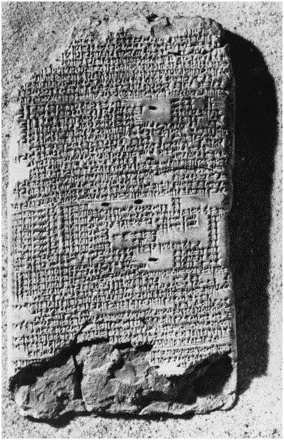
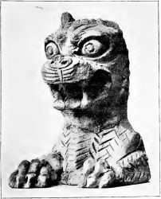
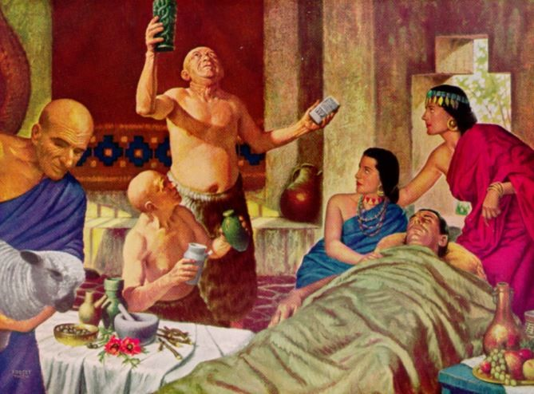

Introduction
In the study of ancient peoples, significant cultural differences sometimes lead us to forget that, biologically, we’re nearly identical to humans who lived thousands of years ago. We operate with the same brain structure, and engage the same complex cognitive, social, emotional, and motivational processes in order to accomplish even the most basic human activities, like engaging in conversation with someone. With a shared brain structure and similar demands on it, we also share in the ways complex mental processes can fail—we share mental illness. What defines mental illness? To reference our modern standard, the fifth edition of the Diagnostic and Statistical Manual of Mental Disorders defines mental illness to be dysfunction in social, cognitive, emotional, or motivational domains that leads to some degree of distress, impairment, or deviance from societal norms. While our shared biology can go wrong in similar ways, cultural differences do matter in what is considered abnormal, how we understand mental illness and its causes, and how we treat it.
I aim here to explore how the ancient Mesopotamians understood mental illness, using our modern understanding of it as a point of reference from which to draw parallels and contrasts. By presentation’s end, it will be clear that in some regards the Mesopotamians got right what we consider right. In other cases, what we continue to get wrong today, so too did they. And in between, we find things that they may have done better than us, as well as ways we succeed over them. I hope this makes clear that the use of our modern understanding of mental illness as a point of reference is not meant to paint it as an objective truth against which other paradigms should be compared—using it as a comparison is instead useful for the simple reason that it is what makes sense to us. Therefore comparisons with our paradigms help us to understand theirs. Many scholars will caution that though this approach is helpful, we may fail to truly understand how the ancients operated by applying to them modern concepts that may have been incomprehensible to them as theirs would otherwise be to us (Scurlock, 2005). I proceed with this course because I believe it to be especially accessible and therefore well suited to a web-presentation, but it is important to consume this presentation with caution.
Finally, on the note of structure, this exploration will first address how the Mesopotamians thought about mental illness. Next, we will examine what they believed caused these afflictions. Lastly comes an exploration and evaluation of how they treated them.
How did the ancient Mesopotamians think about mental illness?
In taking inventory of the sources available to us regarding ancient mental illness, most can be classified as belonging to one of two corpora: diagnostic and therapeutic documents (Scurlock, 2007). Diagnostic texts from this time reveal two important features in how the cultures in question approached mental illness.

An example of a diagnostic text, which would have been in possession of relevant professionals (Obverse of BM47753, British Museum).
First, many sources adopt a nearly exclusively symptomatic approach. That is, rather than constructing a category of illness (such as depression) and containing under that term an implication of a number of possible symptoms (experience of negative emotion, absence of motivation to engage in daily life, etc.) symptoms exist individually (Reynolds 2014). This approach possesses important advantages over our own modern system. Many psychologists today will agree that the current system of classification, with discrete disorders and disorder categories, is out of touch with the reality of how mental illness functions in reality. Ten people meeting diagnostic criteria for schizophrenia, for example, may each have completely different symptoms and experiences, to the point where a reasonable person likely would not group them together without the artificial guidelines imposed by modern diagnostic manuals (Kriegler and Bester, 2014). These classifications have become to some extent necessary for practical reasons (like whether health insurance will cover a certain treatment) and also as a convenient way to navigate the huge variety in mental illness we have observed.
The second interesting point clear from the diagnostic corpus is that symptom observations emphasize the objective and behavioral (Reynolds, 2014). In other words, they are phrased in terms of actions that can be observed by an outside evaluator. Today’s approach to diagnosing mental illness puts considerable weight on subjective reports of patients—their thoughts, feelings, and beliefs. While the focus on external behaviors in a way simplifies the diagnostic process, a modern psychologist would argue that subjective reports offer invaluable insight into mental illness. After all, thoughts, feelings and mental illness alike are all results of biological processes in the mind—observation of the former two can provide clues to what’s going on with the latter.
What did they think caused them?
It is clear from available texts that, in general, ancient peoples conceived of most mental disorders as being the result of possession by spirits or demons or as the result of losing favor with a particular god or goddess. This rationalization is understandable—for there is no apparent external cause for mental disorders and some manifest themselves in ways that are both disturbing and confusing (such as schizophrenia). In a world thought to be governed by gods and spirits, attributing such abnormal behavior to be the result of supernatural activity is an understandable conclusion. Further, the ancient Mesopotamians tended to think of themselves in relation to their gods as slaves to masters—they feared rather than loved them.

This frightful depiction of a Babylonian demon gives an idea of how menacing demons and their power to possess humans could be (British Museum, No. 22,438.).
Ancient Mesopotamians did not always attribute disorders to demons or spirits. With some disorders, including obsessive-compulsive disorder and psychopathic disorder, they recorded symptoms while recognizing that they did not understand the cause behind them. (Reynolds and Kinnier Wilson, 2012). This represents an open-minded approach to some disorders that reflects our current “understanding” of these diseases. Modern psychology also has an imperfect understanding of the causes of certain mental disorders. The true causes of schizophrenia and depression, for example, are still not understood despite some theories that offer suggestions. What really characterizes our modern point of view is that we recognize what we don’t know and do not attempt to impose incorrect explanations on certain phenomena. Thus, in this sense, the ancient Babylonian approach to OCD and psychopathy reflects to our satisfaction a similar acceptance of the unknown. Even if we no longer find possession by demons compelling, our own understanding of the causes of illness haven’t progressed much beyond accepted ignorance, and the ancient Mesopotamians took the same approach in some cases.
To better understand another aspect of the diagnostic procedure through example, consider the following description of what we would today classify as an anxiety disorder (Köcher, 1967):
“If (a man) has had a (long) spell of misfortune—and he does not know how it came upon him—so that he has continually suffered losses and deprivation (including) losses of barley and silver and losses of slaves and slave girls… then the anger of (his) god and goddess is upon him.”
A standout insight reflected here is the grouping of personal symptoms with external life events. It’s not just how he behaves, but how people have behaved to him, for example. Modern psychology understands mental illness as being a result of biological dysfunction in the brain, but that is not to say that environmental events are unimportant. Rather, the things that you experience and the thoughts you have influence the way your brain functions and is structured. Often mental disorders come with some amount of genetic predisposition. But life experiences may determine whether a disorder actually develops. A certain genetic predisposition for depression, for example, only increases likelihood of being depressed in individuals with greater than five major stressful life events (Rudenstine et al., 2015). The ancients recognized that poor mental health and negative life experience went hand-in-hand, even if they didn’t go as far as suggesting that the former may cause the latter.
How did they treat them?
The second group of texts we have can be considered therapeutic in nature, aimed at organizing treatments. Treatments sometimes would take the form of recipes—often several distinct formulas for each symptom so that an administrator would have multiple courses of action in the case of failure. At other times, they would take the form of incantations to be read by a priest as a method by which to expel the spirits or demons inhabiting the body. The perspective of ancient Mesopotamians regarding their place in the hierarchy of the universe would have prevented the destruction of these spirits, which were stronger than any man. This meant that a priest could at best transfer rather than eliminate a spirit. Human figurines might be crafted, and after an incantation to persuade the demon to exit the human and enter the figurine, the figurine would typically be buried in the ground. This is only one example of some of the religiously-based treatments of illness (Reynolds and Wilson, 2014).

A depiction of medical treatment in ancient Babylonian, where a man offering treatment is appealing to the gods.
Were these sorts of incantations and rituals effective? In today’s mainstream understanding of mental illness, we recognize no supernatural cause of illness. But that does not mean that these treatments were useless. They served two important functions: one psychological and one physiological. First, by explaining to a patient that his or her current affliction was the result of inhabitation by a spirit, some amount of explanation is offered to assuage the confusion that someone might feel at the onset of an otherwise inexplicable illness.
The physiological function that spiritual treatment is rooted in the conviction that they were effective. A well-known phenomenon studied today is the placebo effect, wherein belief that a treatment will improve your condition causes a physiological response that does just that. Whether the treatment itself causes any helpful change is irrelevant, as it is literally the belief in it that drives change (Bystad, Bystad, and Wynn, 2015). Therefore the administration of these treatments would likely have improved the conditions of those afflicted, because they offered a solution to symptoms within the context that the patient would have understood them. It is true that the placebo effect is usually mild, but for those who would dismiss any efficacy of these ancient treatments compared to modern treatments, keep in mind that many of our accepted and approved pharmacological treatments work as well or barely better than what patients experience with the placebo effect alone. Antidepressants, for example, work about as well as placebo for patients with mild or moderate depression (Roshanaei-Moghaddam, 2011). To be clear, in cases of severe depression, the effect of these drugs is potent, and many drugs are game-changers for those afflicted with mental illness today. The point here is simply that the efficacy of ancient treatments for mental illness should not be dismissed when in some cases we have not progressed much beyond it.
Conclusion
While a holistic examination of mental illness in ancient Mesopotamia is a difficult task, this presentation has sought to provide examples to compare the understanding of the ancients to that of modern abnormal psychology. We saw that, by understanding mental illness in terms of symptoms rather than constructed disorder categories, the Mesopotamians had a more naturalistic and realistic way of approaching these problems than do we with our modern artificial classification system. On the other hand, we have them beat in our valuation of subjective reports by patients as ways of giving key insights into the brain, where both thoughts and mental illness are born. We fail equally in that many of treatments, both then and now, work no better than placebo effect. And it seems we succeed equally well by recognizing the importance of life events in connection with mental illness. These four examples shows that while we’ve made many technological and ideological advances in our understanding and treatment of mental illness, our understanding is in no way perfect—just as the Mesopotamian understanding is in no way without its own merits. Mental illness is something truly difficult for us to understand—across cultures, times and technological attainment—but in our case and theirs, a goal worth trying for.
Bystad, Martin, Camilla Bystad, and Rolf Wynn. 2015. How can placebo effects best be applied in clinical practice? A narrative review. Psychology Research and Behavior Management 8 (01/29).Köcher F. Die Babylonisch-Assyrische Medizin in Texten und Untersuchungen. Vol. 3. Berlin: Walter de Gruyter; 1967. no. 234.Kriegler, Susan, and Suzanne E. Bester. 2014. A critical engagement with the DSM-5 and psychiatric diagnosis. Journal of Psychology in Africa 24 (4) (07): 393-401.Parys, Magalie. 2014. Introduction to mental illness in ancient mesopotamia.Reynolds, Edward H., and James V. Kinnier Wilson. 2014. Neurology and psychiatry in babylon. Brain 137 (9):2611-9.Reynolds, Edward H., and James Kinnier Wilson V. 2012. Obsessive compulsive disorder and psychopathic behaviour in babylon. Journal of Neurology, Neurosurgery & Psychiatry 83 (2): 199.Reynolds, Edward H., and James V. Kinnier Wilson. 2013. Depression and anxiety in babylon. Journal of the Royal Society of Medicine 106 (12): 478-81.Roshanaei-Moghaddam, Babak, Michael C. Pauly, David C. Atkins, Scott A. Baldwin, Murray B. Stein, and Peter Roy-Byrne. 2011. Relative effects of CBT and pharmacotherapy in depression versus anxiety: Is medication somewhat better for depression, and CBT somewhat better for anxiety? Depression & Anxiety (1091-4269) 28 (7) (07): 560-7.Rudenstine, Sasha, Greg Cohen, Marta Prescott, Laura Sampson, Israel Liberzon, Marijo Tamburrino, Joseph Calabrese, and Sandro Galea. 2015. Adverse childhood events and the risk for new-onset depression and post-traumatic stress disorder among U.S. national guard soldiers. Military Medicine 180 (9) (09): 972-8.Scurlock, Jo Ann. 2005. Diagnoses in assyrian and babylonian medicine : Ancient sources, translations, and modern medical analyses, ed. Burton R. Andersen. Urbana: University of Illinois Press. 2005. Diagnoses in assyrian and babylonian medicine : Ancient sources, translations, and modern medical analyses, ed. Burton R. Andersen. Urbana: University of Illinois Press.